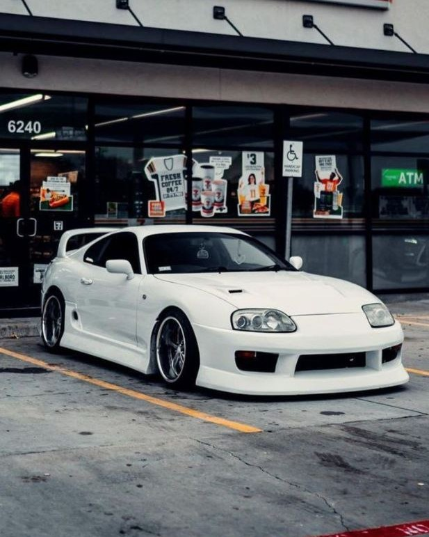
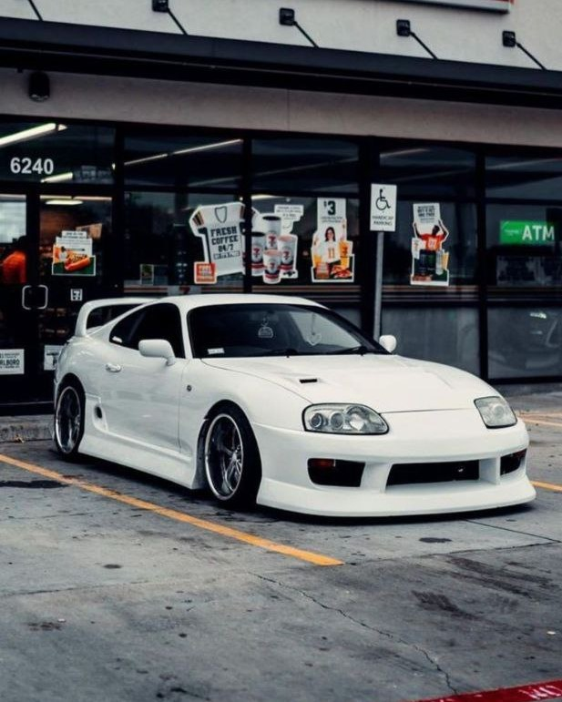

Что такое JDM?
JDM расшифровывается как “Japan Domestic Market” , а переводится - внутренний рынок Японии. Под эту субкультуру попали японские автомобили выпускавшиеся с 1980-х годов и до 2004-х.
Стиль JDM появился в 80-е годы с распространением японских автомобилей за рубежом Японии . В те года как раз начался зараждаться : дрифт и тайматак.А так как все автопроизводители делали по законам Японии . Где нельзя выпускать автомобиль мощностью свыше 280 л.с. и максимальной скоростью больше 180 км/час . Начался развиваться и тюнинг автомобилей . Энтузиасты соревнований и понимавшие их желания про изводители тюнингованых деталей во многом и определили JDM-щиков.
JDM включает в себя определённую модернизацию авто , а точнее некоторый стайлинг :
- Фары отличаются от обычных наличием ламп головного сверка на желтый или тонирование оптики в пленку того же цвета .
- На кузов устанавливаются расширения арок на заклёпках , яркая раскраска в Японском стиле .
- Устанавливают койловеры для занижения .
- По колёсам предпочтение дают фирме WORK и BBS
- Не редко можно встретить и полноценные обвесы в круг от именитых брендов :Advan , TRD , Veil Side , Nismo и т.д.